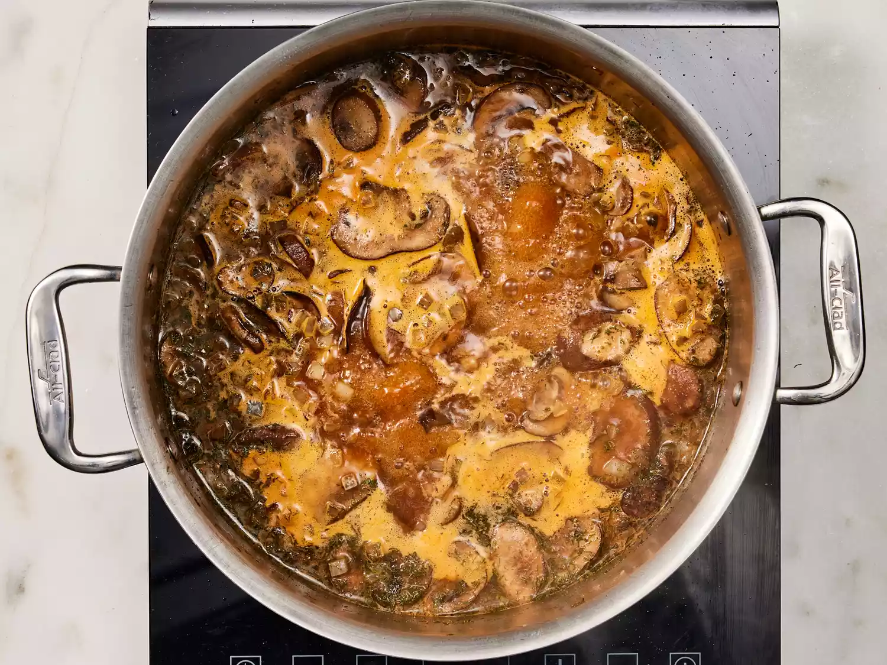

Hungarian Mushroom Soup
This creamy Hungarian mushroom soup has lots of flavor and is easy to make. It's primarily a mushroom soup but derives a lot of its flavor from other ingredients. My family loves soup and this is one of their favorites.
Ingredients
- 4 tablespoons unsalted butter
- 2 cups chopped onions
- 1 pound fresh mushrooms, sliced
- 2 cups chicken broth
- 1 tablespoon soy sauce
- 1 tablespoon paprika
- 2 teaspoons dried dill weed
- 1 cup milk
- 3 tablespoons all-purpose flour
- ½ cup sour cream
- ¼ cup chopped fresh parsley
- 2 teaspoons lemon juice
- 1 teaspoon salt
- ground black pepper to taste
How to Make It
Here's a detailed, step-by-step recipe on how to make this delicious dish!
- Step 1: Gather the ingredients.

- Step 2: Melt butter in a large pot over medium heat. Add onions; cook and stir until softened, about 5 minutes. Add mushrooms and sauté for 5 more minutes. Stir in broth, soy sauce, paprika, and dill; reduce heat to low, cover, and simmer for 15 minutes.

- Step 3: Whisk milk and flour together in a separate bowl; stir into soup until blended. Cover and simmer for 15 more minutes, stirring occasionally. 
- Step 4: Add sour cream, parsley, lemon juice, salt, and ground black pepper; stir over low heat until warmed through, about 3 to 5 minutes. Serve immediately.
- Step 5: Enjoy!
Nutritional Facts
Per serving
- 201 Calories
- 14g Fat
- 15g Carbs
- 8g Protein